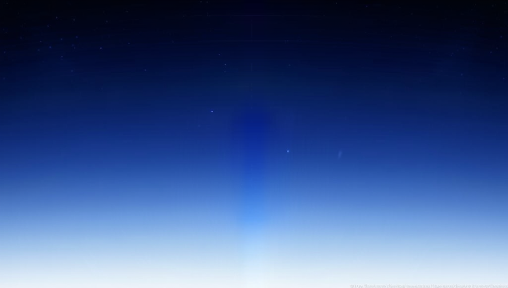
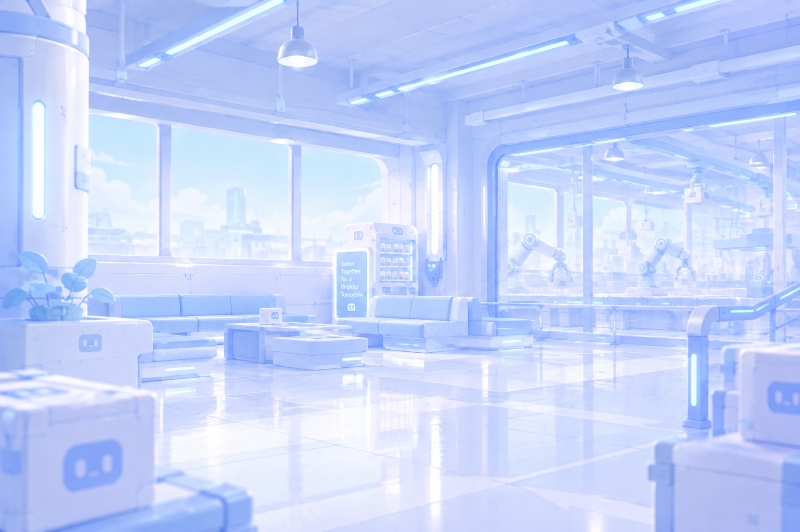
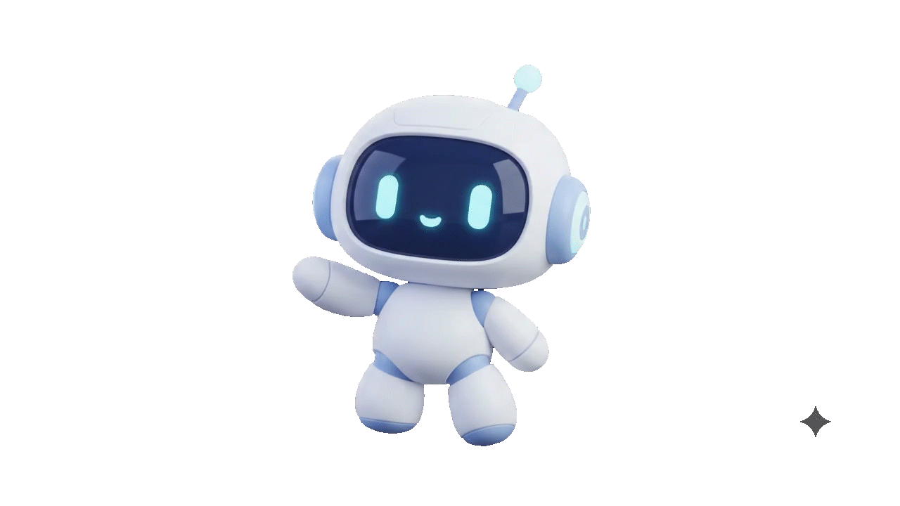
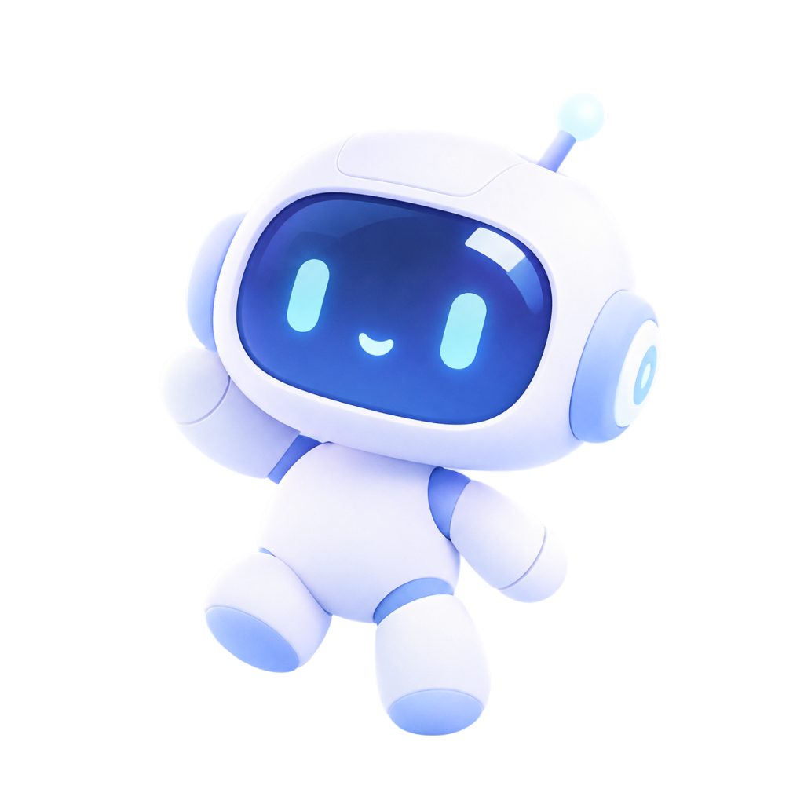
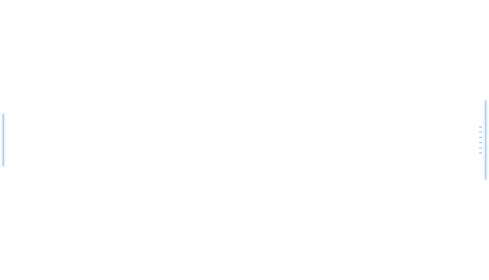

아래로 스크롤해 면접 안내를 받을 수 있습니다.

LOGO
면접진행중


면접대기실
면접 직무 선택
다섯개의 직무중 면접자님이 지원하신 직무 분야를 선택해주세요
직무
과제전형


면접 도우미
- 가치관
- 직무적합성
- 인성
SECTION 01
가치관 영역
준비되셨다면 시작 버튼을 눌러주세요!
가치관 · Q1
60
INTERVIEW COMPLETE
면접이 종료되었습니다
끝까지 성실하게 답변해주셔서 감사합니다.
결과는 추후 안내드리겠습니다.



면접진행안내
안녕하세요 디자인 파트에 지원해주신 NO17님
지금부터 저희는 지원자님을 가치관, 직무적합성, 인성
다음 3개의 영역에서 평가할 예정입니다.
지원자님의 모든 답변과 행동은 최종 결과에 영향을 미치니 신중히 답변 부탁드립니다.
가치관
지원자님이 힘든 상황을 쉽게 포기하지 않고 조직에
잘 어울리는지 확인하기 위해 묻는 질문들로 구성되어 있습니다
직무적합성
지원자님이 해당 직무를 수행하는 데 필요한 역량, 지식,
경험을 갖추었는지 검증하는 질문들로 구성되어 있습니다
인성
지원자의 기본적인 품성뿐만 아니라 조직 적응력, 협업 태도,
문제해결 방식을 검증하는 질문들로 구성되어 있습니다
얼굴을 가이드 안에 맞춘 뒤 촬영 버튼을 눌러주세요
카메라를 사용할 수 없어요.
브라우저의 카메라 권한을 허용한 뒤 다시 시도해주세요.
사진촬영안내
모든 안내사항을 확인하셨다면
면접에 앞서 지원자님의 면접 사진 촬영이 있겠습니다.
재촬영 기회는 없으니, 이 점 참고하시기 바라겠습니다.